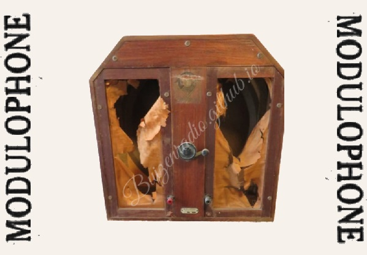

Afmetingen (BxHxD): Status: WERKING ONBEKEND Modulophone was een merk van Entrepots Radio-Electriques (J. De Craecker et cie), gevestigd te Brussel, Stoofstraat 71 (Rue de l'Etuve). Modulophone bouwde vooral speakers en versterkers, doch ook ontvangers. De weinige publiciteit die ik vond van Modulophone betreft deze voor deze speaker, de in 1931 door striptekenaar Hergé (Kuifje) ontworpen publiciteit voor de Modulophone pick-up versterker en een publiciteit uit 1931 voor de ontvanger "La boite a musique".

Modulophone (entrepots Radio-electriques
Modulophone was een merk van Entrepots Radio-Electriques (J. De Craecker et cie), gevestigd te Brussel, Stoofstraat 71 (Rue de l'Etuve).
Modulophone bouwde vooral speakers en versterkers, doch ook ontvangers. De weinige publiciteit die ik vond van Modulophone betreft deze voor deze speaker-serie, de in 1931 door striptekenaar Hergé (Kuifje) ontworpen publiciteit voor de Modulophone pick-up versterker, een publiciteit uit 1931 voor de ontvanger "La boite a musique" en één uit 1932 voor de Super Modulophone.
Op vrijdg 08/04/1932 brak er brand uit in de inrichting van Entrepots Radio Electriques. Later op het jaar vindt men hen op en nieuw adres, namelijk Gallaitstraat 176 te Schaarbeek. Vanaf 1933 is er van he bedrijf niets meer te bespeuren.


{kind=link}
{kind=link}
{kind=link}
{kind=link}
{kind=link}